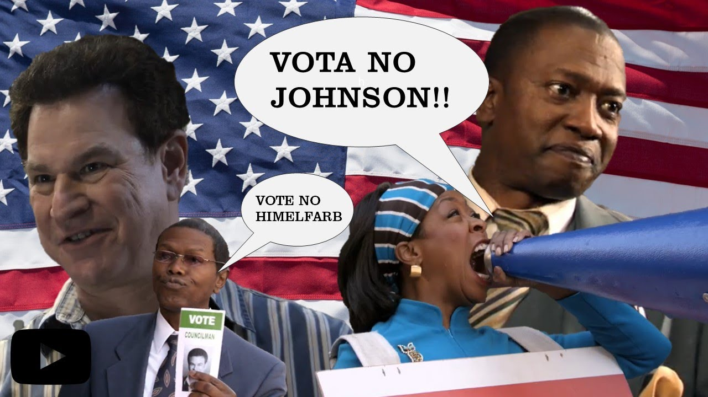

A disputa dos vereadores em Bed-Stuy
Bed-Stuy é um bairro baseado em Bedford-Stuyvesant, localizado no Brooklyn, Nova York, onde a história do comediante Chris Rock é contada no seriado Todo Mundo Odeia o Chris
Esta página, além de servir como entretenimento e entrega de trabalho para a DIO, é uma forma de homenagear essa série querida pelos brasileiros.
